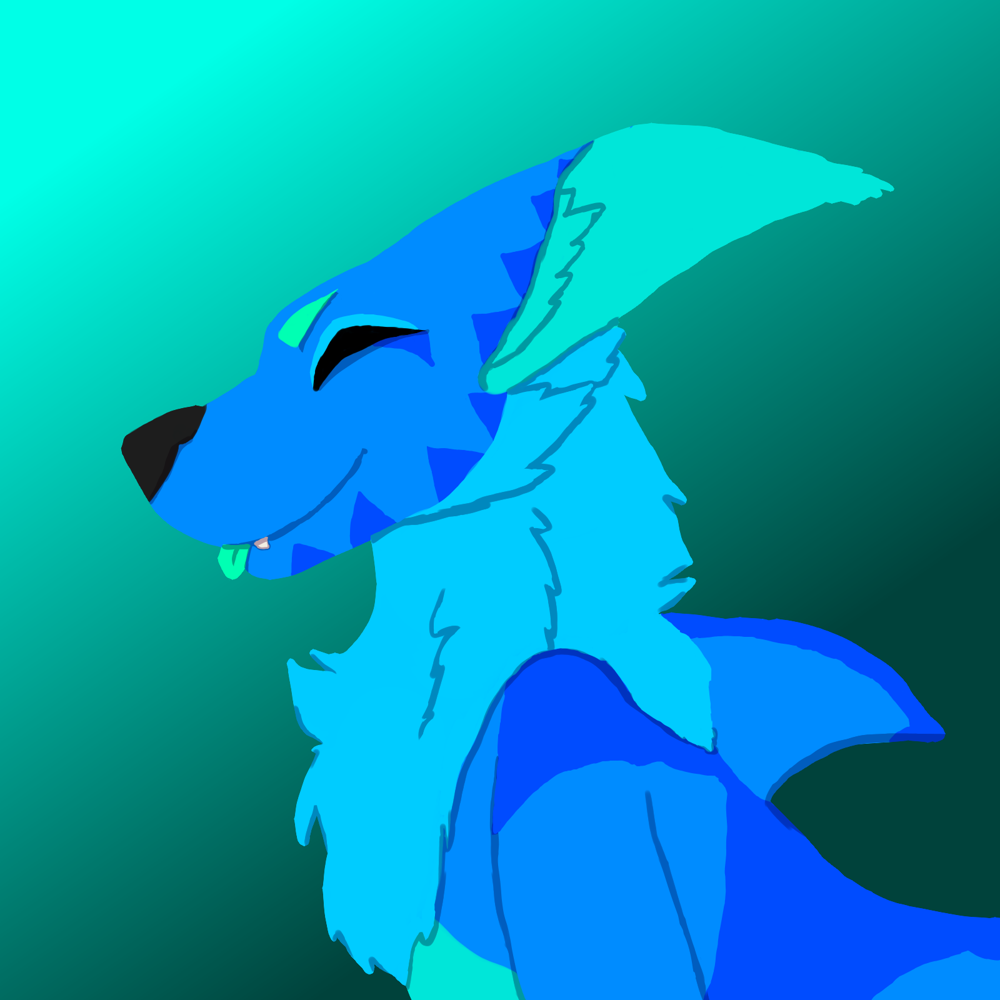
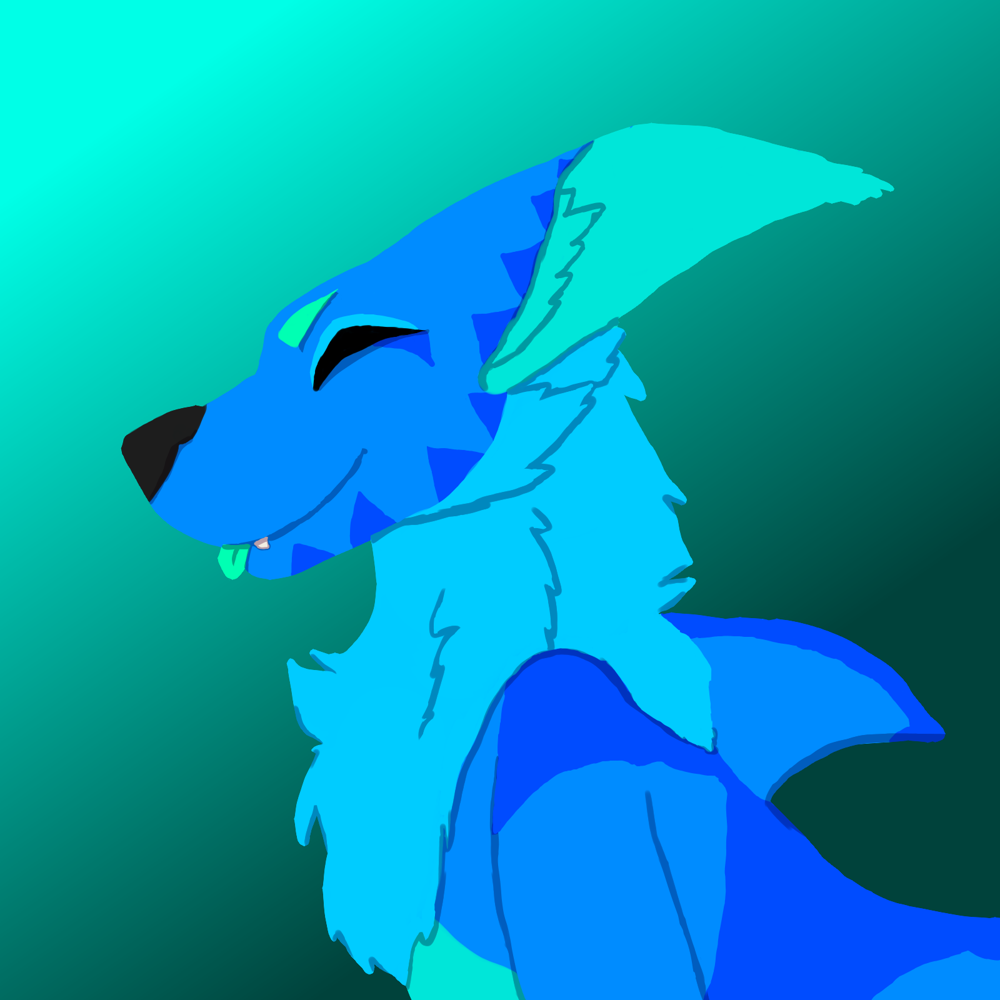

Eventide
A little bit about this gal!
Species: Manokit
Gender: Nonbinary/Shark
Pronouns: They/Shark/She, minor preference
Sexuality: none, Romance: Women
Height: ~5'3
Aesthetic: Boho, Oceanic, Blue Kawaii
Clothing preferences: Usually none, occasionally blue bandanna; looser, dark/blue shirts, or swim tops (scuba top, tankini top, etc.); usually avoids pants & skirts; no jewelry
Hobbies: Swimming, usually exploring sunken shipwrecks or reefs
Dwelling: Lives in self-made cave/shipwreck hybrid on outskirts of small Manokit community in the Verde Kelp Forest
Some art of them!
 
